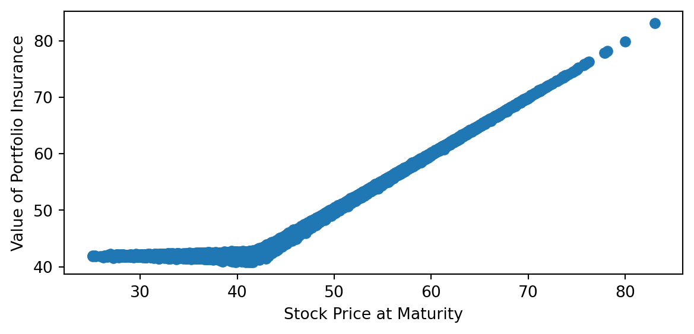

In principle, once we know the state prices or stochastic discount factor we can find the value of any future cash flows and derivatives. In the binomial model in Chapter 7 we found the state prices by replicating the pay offs to Arrow securities using the stock and the bond. However in the continuous time setting, we must have a way of deriving this information. In this chapter, we will see that through dynamic trading strategies, we can replicate the payoffs of derivative securities. This allows us to find prices of digital options which essentially allow us to find state prices. We first discuss the classic Merton argument for replicating the payoff of a call option.
8.2 Replicating Portfolios
In addition to the original Black Scholes derivation, another derivation of the Black Scholes formula is provided by Merton. He asked the question whether by trading the stock and the risk free asset whether the payoff to a European call option can be replicated.
For this Chapter, we assume that the stock price follows \[ \,\mathrm{d}S(t) = (\mu - q) S(t) \,\mathrm{d}t + \sigma S(t) \,\mathrm{d}B(t) \] where owning the stock entitles the owner to a flow of dividends \(q S(t) \,\mathrm{d}t\).
Let \(\delta_t\) be the number of shares of the stock held at time \(t\) and \(\alpha_t\) the number of shares of an initial investment of one dollar in the risk free asset. Then the portfolio value, \(W_t\) is \(W_t= \alpha_t R(t) + \delta_t S(t)\) where \(R(t)= e^{rt}\) is the time \(t\) value of an initial time \(0\) investment of one dollar in the risk free asset. The portfolio should start with an initial value, \(W_0\), should not have any cash inflows or outflows and have a terminal value equal to a call payoff so the changes in value are completely dictated by the changes in the value of the assets. That is, assuming continuous trading, \[ d W_t = \delta_t d S(t) + \delta_t q S(t) dt + \alpha_t d R(t) = \delta_t \left(\mu S(t) dt + \sigma S(t) d B_t\right) + \alpha_t r R(t) dt\] with terminal condition \[ W_T = \alpha_T R(T) + \delta_T S(T) = (S(T) - K)^{+} \] The problem is to find \(\delta_t\) and \(\alpha_t\) for all times and states. If we can accomplish this, then by `no-arbitrage’ the call price must be the value of the initial investment. Assume the call price is a function of the stock price and time: \(C(t,S(t))\). Then by Ito’s Lemma \[ d C(t,S(t)) = \left(\frac{\partial C}{\partial t} + \frac{\partial C}{\partial S} (\mu-q) S(t) + \frac{1}{2} \frac{\partial^2 C}{\partial S^2} \sigma^2 S_t^2 \right) dt + \frac{\partial C}{\partial S} \sigma S(t) dB_t \] It should be apparent that we want to hold \(\delta = \frac{\partial C}{\partial S}\), which is called the delta of the call option. By doing so, we match the diffusion term in the change in wealth and the change in the call option. Then matching the drift terms in both expressions \[ \frac{\partial C}{\partial S} \mu S(t) + \alpha_t r R(t) = \frac{\partial C}{\partial t} + \frac{\partial C}{\partial S} (\mu-q) S(t) + \frac{1}{2} \frac{\partial^2 C}{\partial S^2} \sigma^2 S(t)^2\] which can be solved to give \[ \alpha_t r R(t) =r \left(W_t -\frac{\partial C}{\partial S} S(t) \right) = \frac{\partial C}{\partial t}-\frac{\partial C}{\partial S} q S(t) + \frac{1}{2} \frac{\partial^2 C}{\partial S^2} \sigma^2 S(t^2\] which gives the equation \[r W_t = \frac{\partial C}{\partial t} + \frac{\partial C}{\partial S}(r-q) S(t)+\frac{1}{2} \frac{\partial^2 C}{\partial S^2} \sigma^2 S(t)^2\] with a boundary condition \(W_T = (S(T)-K)^{+}\). However, no-arbitrage suggests \(W_t = C(t,S(t))\) which gives us the partial differential equation \[r C = \frac{\partial C}{\partial t} + \frac{\partial C}{\partial S} (r-q) S+\frac{1}{2} \frac{\partial^2 C}{\partial S^2} \sigma^2 S^2\] with a boundary condition \(C(T,S_T)= (S_T - K)^{+}\). Close observation of the right hand side we see this is the drift term of Ito expansion for \(C\) if we work in the risk neutral measure. The right hand side then says in the risk neutral measure, the call option earns the risk free return. This is a partial differential equation and a fairly tedious set of calcuations show the Black Scholes formula, the risk neutral expected discounted payoff is a solution (in fact it is the only positive solution).1 The risk neutral expectation can be found as in Chapter XX : \[C= e^{-q (T-t)} S(t) N(d_1) - K e^{r(T-t)} N(d_2)\]\[ d_1= ~~;~~ d_2= . \] which is the Black Scholes formula adjusted for dividends.
However, there is nothing special about a call option. The same argument will apply for any European style option. The only difference is the terminal condition. This procedure allows us to replicate the payoff of any European option even for those which might not be traded. We can solve for the replication strategy for digital options by solving the PDE with a boundary condition given by the digital option payoff. The solution to the PDE with the terminal condition is given by the risk neutral expectaion of the the discounted terminal conadition (payoffs). This observation had a profound effect on practice.
Portfolio Insurance
A particularly popular example is portfolio insurance. Recall, that a protective put position buys a put and buys a share and the payoff at the expiration of the put is given by \(\max(K,S_T)\). The reason for the name protective put is apparent since the position can pay off no less than \(K\). The cost of this insurance is the price of the put. However, if the put is not traded, we can synthetically replicate this payoff using the prodedure above assuming we can trade continuously. The basic recipe is to start with inital wealth equal to that for a protective put position: \(W_0 = P(0,S_0)+S_0\). The delta of the protective put position can be calcuated to be the delta of the put plus 1 which is \(N(d_1)\), where \(d_1\) is calculated at each point in time. However, in practice we cannot trade continuously. A simple discrete strategy would rebalance at intervals \(\Delta t\). The strategy calculates \(N(d_1)\) at time 0 and holds \(P(0,S_0)+S_0 - N(d_1)S_0\) dollars in the risk free asset and \(N(d_1)\) shares of the asset. Thereafter these holdings are adjusted. The change in portfolio value over the interval \(\Delta t\) is \[\Delta W= W_{i \Delta t}- W_{(i-1)\Delta t} \]\[
= (P((i-1)\Delta t,S_{(i-1)\Delta t})+S_{(i-1)\Delta t} - N(d_1-)S_{(i-1)\Delta t})(R_{i\Delta t}-R_{(i-1)\Delta t}) + N(d1-)(S_{i\Delta t}-S_{(i-1)\Delta t})
\] where \(N(d1-)\) is the delta chosen at time \((i-1)\Delta t\). The question is if the Black Scoles model is correct, how accurate can a discrete rebalancing scheme be? This is simulated in the following code:
Code
import numpy as np# from bsfunctions import *import matplotlib.pyplot as pltimport timefrom math importpow, exp, sqrtfrom scipy import stats# incs = np.genfromtxt('incs.csv',delimiter=",",skip_header=1)def blackscholes(S0, K, r, q, sig, T, call =True):'''Calculate option price using B-S formula. Args: S0 (num): initial price of underlying asset. K (num): strick price. r (num): risk free rate. q (num): dividend yield sig (num): Black-Scholes volatility. T (num): maturity. call (bool): True returns call price, False returns put price. Returns: num ''' d1 = (np.log(S0/K) + (r -q + sig**2/2) * T)/(sig*np.sqrt(T)) d2 = d1 - sig*np.sqrt(T)# norm = sp.stats.norm norm = stats.normif call:return np.exp(-q*T)*S0 * norm.cdf(d1,0,1) - K * np.exp(-r * T) * norm.cdf(d2,0, 1)else:return np.exp(-q*T)*S0 *-norm.cdf(-d1,0,1) + K * np.exp(-r * T) * norm.cdf(-d2,0, 1)def blackscholes_delta(S0, K, r, q, sig, T, call =True):'''Calculate option price using B-S formula. Args: S0 (num): initial price of underlying asset. K (num): strick price. r (num): risk free rate. q (num): dividend yield sig (num): Black-Scholes volatility. T (num): maturity. call (bool): True returns call price, False returns put price. Returns: num ''' d1 = (np.log(S0/K) + (r -q + sig**2/2) * T)/(sig*np.sqrt(T)) d2 = d1 - sig*np.sqrt(T)# norm = sp.stats.norm norm = stats.normiftype(call) ==bool:if call:return np.exp(-q*T)*norm.cdf(d1,0,1)else:return np.exp(-q*T)*norm.cdf(-d1,0,1)else:print("Not a valid value for call")# parameters# number of paths# n = incs.shape[1]n =100000# number of divisions# m = incs.shape[0]m =100# interest rater =.1# dividend yieldq=0.0# true driftmu =.15# volatilitysig =.2# Initial Stock PriceS0 =42# Strike PriceK =42# MaturityT =0.5# seed for random generatorseed=1234# define a random generatorrg = np.random.RandomState(seed)# initialize# generate normal random vairablesdt= T/mvol=sig*np.sqrt(dt)incs = rg.normal(0,vol,[m,n])tline = np.linspace(0,T,m+1)St = np.zeros((m+1,n))#St1 = np.zeros((m+1,n))V_vec = np.zeros((m+1,n))delta = np.zeros((m,n))put= blackscholes(S0,K,r, q, sig,T,call=False)incs_cumsum = np.concatenate((np.zeros((1,n)),incs),axis=0).cumsum(axis=0)V_vec = np.zeros((m+1,n))t_mat = np.repeat(tline.reshape((m+1,1)), n, axis=1)drift_cumsum = (mu -q -0.5*sig**2) * t_matSt = S0 * np.exp(incs_cumsum + drift_cumsum)delta = blackscholes_delta(St[:-1,:],K,r, q, sig,T-t_mat[:-1,:])V_vec[0,:] = S0 + putfor i inrange(1,m+1): V_vec[i,:] = V_vec[i-1,:] + (np.exp(r*dt)-1) * (V_vec[i-1,:] - delta[i-1,:] * St[i-1,:])+ delta[i-1,:] * (St[i,:]-St[i-1,:])# Uses actual simulated changes in riskfree and stock price not the dt and dB approximations # plot ST versus VTplt.scatter(St[m,:],V_vec[m,:])plt.xlabel('Stock Price at Maturity')plt.ylabel('Value of Portfolio Insurance')plt.show()

With \(m=100\) rebalancing dates over \(T=0.5\) for the parameters chosen the repliacting strategy does a pretty good job. The hedging errors occur when the stock price is close to the strike price. This is not surprising since the delta changes (measured by the gamma) fastest around this point. A gamma hedge would potentially improve the performance.
The portfolio insurance rebalancing scheme involves sell stock and buying bonds when the stock price goes down and buying stocks and selling bonds when the stock price goes up. This can be destabilizing and was identified as a contributor to the 1987 stock market crash.
8.3 Delta Hedging
The ability to create a fully hedged (risk-free) portfolio of the stock and an option is the essence of the arbitrage argument underlying the Black-Scholes formula, as we saw in Chapter 7 for the binomial model. For a call option, such a portfolio consists of delta shares of the underlying asset and a short call option, or a short position of delta shares of the underlying and a long call option. These portfolios have no instantaneous exposure to the price of the underlying. To create a perfect hedge, the portfolio must be adjusted continuously, because the delta changes when the price of the underlying changes and when time passes. In practice, any hedge will therefore be imperfect, even if the assumptions of the model are satisfied.
We first consider the continuous-time hedging argument. Consider a European call option with maturity \(T\), and let \(C(S,t)\) denote the value of the option at date \(t<T\) when the stock price is \(S\) at date \(t\). Consider a portfolio that is short one call option and long \(\delta\) shares of the underlying asset and that has a (short) cash position equal to \(C-\delta S\). This portfolio has zero value at date \(t\).
The change in the value of the portfolio in an instant \(\mathrm{d} t\) is \[
-\mathrm{d} C + \delta \,\mathrm{d} S + q \delta S\,\mathrm{d} t+(C-\delta S)r\,\mathrm{d} t\;.
\qquad(8.1)\]
The first term reflects the change in the value of the option, the second term is the capital gain or loss on \(\delta\) shares of stock, the third term is the dividends received on \(\delta\) shares of stock, and the fourth term is the interest expense on the short cash position.
On the other hand, we know from Ito’s formula that
\[
\mathrm{d} C = \frac{\partial C}{\partial S}\,\mathrm{d} S + \frac{\partial C}{\partial t}\,\mathrm{d} t + \frac{1}{2}\frac{\partial^2C}{\partial S^2} (\mathrm{d} S)^2
\]\[
= \delta \,\mathrm{d} S + \Theta \,\mathrm{d} t + \frac{1}{2}\Gamma \sigma^2S^2\,\mathrm{d} t\;.
\qquad(8.2)\] where we call \(\Theta = \frac{\partial C}{\partial t}\) the time decay and \(\Gamma = \frac{\partial^2 C}{\partial S^2}\) is the Gamma or convexity.
Substituting Equation 8.2 into Equation 8.1 shows that the change in the value of the portfolio is \[
-\Theta \,\mathrm{d} t - \frac{1}{2}\Gamma \sigma^2S^2\,\mathrm{d} t+ q \delta S\,\mathrm{d} t+(C-\delta S)r\,\mathrm{d} t\;.
\qquad(8.3)\]
Several aspects of this are noteworthy. First, as noted earlier, the delta hedge (being long \(\delta\) shares of the underlying) eliminates the exposure to changes in the price of the underlying—there is no \(\mathrm{d} S\) term in Equation 10.6. Second, \(\Theta\) will be negative, because it captures the time decay in the option value; being short the option means the portfolio will profit from time decay at rate \(-\Theta\). Third, this portfolio is short gamma. We can also say it is short convexity, the term convexity referring to the convex shape of the option value as a function of the price of the underlying, which translates mathematically to a positive second derivative (gamma). The volatility in the stock makes convexity valuable, and a portfolio that is short convexity will suffer losses. Finally, the portfolio is earning dividends but paying interest.
It is straightforward to check, from the definitions of \(\Theta\), \(\Gamma\) and \(\delta\), that the sum of the terms in Equation 10.6 is zero. The time decay in the option value and dividends received on the shares of the underlying exactly offset the losses due to convexity and interest. Therefore, the delta hedge is a perfect hedge. The portfolio, which has a zero cost, neither earns nor loses money. This is true not only on average but for every possible change in the stock price.
To see how well this works with only discrete adjustments to the hedge, one can simulate the changes in \(S\) over time and sum the gains and losses over discrete rebalancing periods. One should input the actual (not risk-neutral) expected rate of return on the asset to compute the actual distribution of gains and losses.2
8.4 Gamma Hedging
To attempt to improve the performance of a discretely rebalanced delta hedge, one can use another option to create a portfolio that is both delta and gamma neutral. Being delta neutral means hedged as in the previous section—the portfolio value has no exposure to changes in the underlying asset price. In other words, it means that the derivative of the portfolio value with respect to the price of the underlying (the portfolio delta) is zero. Being gamma neutral means that the delta of the portfolio has no exposure to changes in the underlying price, which is equivalent to the second derivative of the portfolio value with respect to the price of the underlying (the portfolio gamma) being zero. If the delta truly did not change, then there would be no need to rebalance continuously, and hence no hedging error introduced by only adjusting the portfolio at discrete times rather than continuously. However, there is certainly no guarantee that a discretely-rebalanced delta/gamma hedge will perform better than a discretely rebalanced delta hedge.
A delta/gamma hedge can be constructed as follows. Suppose we have written (shorted) a call option and we want to hedge both the delta and gamma using the underlying asset and another option, for example, another call option with a different strike. In practice, one would want to use a liquid option for this purpose, which typically means that the strike of the option will be near the current value of the underlying (i.e., the option used to hedge would be approximately at the money).
Let \(\delta\) and \(\Gamma\) denote the delta and gamma of the written option and let \(\delta'\) and \(\Gamma'\) denote the delta and gamma of the option used to hedge. Consider holding \(a\) of shares of the stock and \(b\) units of the option used to hedge in conjunction with the short option. The delta of the stock is one (\(\mathrm{d} S/\mathrm{d} S = 1\)), so to obtain a zero portfolio delta we need
\[
0 = - \delta + a + b\delta'.
\qquad(8.4)\]
The gamma of the stock is zero (\(\mathrm{d}^2 S/\mathrm{d} S^2 = d\,1/\mathrm{d} S = 0\)), so to obtain a zero portfolio gamma we need
\[
0 = - \Gamma + b\Gamma'\;.
\qquad(8.5)\]
Equation Equation 10.8 shows that we should hold enough of the second option to neutralize the gamma of the option we have shorted; i.e., \[\
b= \frac{\Gamma}{\Gamma'}
\] Equation Equation 10.7 shows that we should use the stock to delta hedge the portfolio of options; i.e., \[
a=\delta - \frac{\Gamma}{\Gamma'}\delta'\;.
\]
Discretely-Rebalanced Delta Hedges
To compute the real-world distribution of gains and losses from a discretely-rebalanced delta hedge, we input the expected rate of return \(\mu\). We consider adjusting the hedge at dates \(0=t_0<t_1<\cdots<t_N=T\), with \(t_i-t_{i-1}=\Delta t = T/N\) for each \(i\). The changes in the natural logarithm of the stock price between successive dates \(t_{i-1}\) and \(t_i\) are simulated as \[\Delta \log S = \left(\mu-q-\frac{1}{2}\sigma^2\right)\,\Delta t + \sigma\,\Delta B\; ,\] where \(\Delta B\) is normally distributed with mean zero and variance \(\Delta t\). The random variables \(\Delta B\) are simulated as standard normals multiplied by \(\sqrt{\Delta t}\). We begin with the portfolio that is short a call, long \(\delta\) shares of the underlying, and short \(\delta S-C\) in cash. After the stock price changes, say from \(S\) to \(S'\), we compute the new delta \(\delta'\). The cash flow from adjusting the hedge is \((\delta-\delta')S'\). Accumulation (or payment) of interest on the cash position is captured by the factor \(e^{r\Delta t}\). Continuous payment of dividends is modelled similarly: the dividends earned during the period \(\Delta t\) is taken to be \(\delta S\left(e^{q\Delta t}-1\right)\). The cash position is adjusted due to interest, dividends, and the cash flow from adjusting the hedge. At date \(T\), the value of the portfolio is the cash position less the intrinsic value of the option.
To describe the distribution of gains and losses, we compute percentiles of the distribution. You should see that the hedge becomes more nearly perfect as the number of periods \(N\) is increased. Note that this is true regardless of the \(\mu\) that is input, which reaffirms the point that option values and hedges do not depend on the expected rate of return of the underlying. The percentile is calculated taking into account the dicreteness of the sample.3
Code
import numpy as npfrom scipy.stats import normimport scipy.optimize as optimizedef simulated_delta_hedge_profit(S0, K, r, sigma, q, T, mu, M, N, pct):""" Inputs: S0 = initial stock price K = strike price r = risk-free rate sigma = volatility q = dividend yield T = time to maturity mu = expected rate of return N = number of time periods M = number of simulations pct = percentile to be returned """ dt = T / N SigSqrdt = sigma * np.sqrt(dt) drift = (mu - q -0.5* sigma **2) * dt Comp = np.exp(r * dt) Div = np.exp(q * dt) -1 LogS0 = np.log(S0)# Call0 = black_scholes_call(S0, K, r, sigma, q, T) Call0 = blackscholes(S0,K,r, q, sigma,T) Delta0 = blackscholes_delta(S0,K,r, q, sigma,T)# Delta0 = black_scholes_call_delta(S0, K, r, sigma, q, T) Cash0 = Call0 - Delta0 * S0 Profit = np.zeros(M)for i inrange(M): LogS = LogS0 Cash = Cash0 S = S0 Delta = Delta0for j inrange(1, N): LogS += drift + SigSqrdt * np.random.randn() NewS = np.exp(LogS) NewDelta = blackscholes_delta(NewS, K, r, q, sigma, T - j * dt) Cash = Comp * Cash + Delta * S * Div - (NewDelta - Delta) * NewS S = NewS Delta = NewDelta LogS += drift + SigSqrdt * np.random.randn() NewS = np.exp(LogS) HedgeValue = Comp * Cash + Delta * S * Div + Delta * NewS Profit[i] = HedgeValue -max(NewS - K, 0)return np.percentile(Profit, pct *100)# Example usage (you can replace these with input values)S =100# Initial stock priceK =100# Strike pricer =0.05# Risk-free ratesigma =0.2# Volatilityq =0.02# Dividend yieldT =1# Time to maturity in years# CallPrice = 10 # Call price for implied volatility calculation# Simulate delta hedging profitS0 =100# Initial stock pricemu =0.1# Expected rate of returnM =1000# Number of simulationsN =252# Number of time periodspct =0.95# Percentile to be returneddelta_hedge_profit = simulated_delta_hedge_profit(S0, K, r, sigma, q, T, mu, M, N, pct)print(f"Delta Hedge Profit (95th percentile): {delta_hedge_profit}")
The basic premise which underlies our analysis is that we can use traded assets to replicate payoffs in any state time contingency. On the surface this would seem to be a stretch. For example, it seems implausible that we could find the value of a security which pays off in the event Martians land on earth. Fortuneately, we are only concerned with relevant events. For example, suppose we model the stock price using two sources of uncwertainty governed by two independent Brownian motions \(B_{1,t}\) and \(B_{2,t}\) and write \[ \,\mathrm{d}S(t) = \mu S(t) \,\mathrm{d}t + \sigma_1 S(t) \,\mathrm{d}B_{1,t} + \sigma_2 S(t) \,\mathrm{d}B_{2,t} . \] Then defining \(\sigma = \sqrt{\sigma_1^2 + \sigma_2^2}\) and \(B_t = \frac{\sigma_1}{\sigma} B_{1,t} + \frac{\sigma_2}{\sigma} B_{2,t}\), \(B_t\) is a Brownian motion by Levy’s theorem and \[ \,\mathrm{d}S(t) = \mu S(t) \,\mathrm{d}t + \sigma S(t) \,\mathrm{d}B_t .\] We can value options on the stock. However, we can not find state prices which depend on \(B_{1,t}\) and \(B_{2,t}\) by themselves; this would require more securities. Later in Chapter XX we will study stochastic volatility models where \(\sigma\) depends on a differnt Brownian motion. In this setting, we need more assets to dynamically replicate pay offs. However, we can overcome this difficulty by either trading another asset or choosing the risk neutral measure to match traded options prices.
8.5 Exercises
Exercise 8.1 Create Python code which inputs \(K\), \(r\), \(\sigma\), \(q\) and \(T\). Compute the delta of a call option for stock prices \(S = .01K\), \(.02K\), , \(1.99K\), \(2K\) (i.e., \(S = iK/100\) for \(i=1, \ldots 200\)) and plot the delta against the stock price.
Exercise 8.2 The delta of a digital option that pays $1 when \(S(T)>K\) is \[\frac{\mathrm{e}^{-rT}\mathrm{n}(d_2)}{\sigma S\sqrt{T}}\; .\] Repeat the previous problem for the delta of this digital. Given that in reality it is costly to trade (due to commissions, the bid-ask spread and possible adverse price impacts for large trades), do you see any problems with delta hedging a short digital near maturity if it is close to being at the money?
Exercise 8.3 Modify the Python code for replicating portfolio insurance to simulate a discrete replication of a digital option using the delta in the previous problem. Run the code for \(10,20,100,1000\) rebalancing dates. When does the strategy do a good job and when does it fail?
Exercise 8.4 Repeat Exercise 8.1 for the gamma of a call option.
Exercise 8.5 Consider delta and gamma hedging a short call option, using the underlying and a put with the same strike and maturity as the call. Calculate the position in the underlying and the put that you should take, using the analysis in Section 8.4. Will you ever need to adjust this hedge? Relate your result to put-call parity.
Exercise 8.6 The delta of a share digital that pays one share when \(S(T)>K\) is \[\mathrm{e}^{-qT}\mathrm{N}(d_1) + \frac{\mathrm{e}^{-qT}\mathrm{n}(d_1)}{\sigma \sqrt{T}}\; .\] Repeat Exercise 8.1 for the delta of this share digital.
Exercise 8.7
Modify the function Simulated_Delta_Hedge_Profit to compute percentiles of gains and losses for an investor who writes a call option and constructs a delta and gamma hedge using the underlying asset and another call option. Include the exercise price of the call option used to hedge as an input, and assume it has the same time to maturity as the option that is written. Hint: In each period , the updated cash position can be calculated as
where denotes the number of shares of the stock held, denotes the number of units held of the option that is used for hedging, and denotes the price of the option used for hedging (computed from the Black-Scholes formula each period). This expression embodies the interest earned (paid) on the cash position, the dividends received on the shares of stock and the cash inflows (outflows) from adjusting the hedge. At the final date , the value of the hedge is
and the value of the overall portfolio is the value of the hedge less
where denotes the strike price of the option used to hedge and denotes the strike of the option that was written.
Exercise 8.8 Suppose an investor invests in a portfolio with price \(S\) and constant dividend yield \(q\). Assume the investor is charged a constant expense ratio \(\alpha\) (which acts as a negative dividend) and at date \(T\) receives either his portfolio value or his initial investment, whichever is higher. This is similar to a popular type of variable annuity. Letting \(D\) denote the number of dollars invested in the contract, the contract pays \[
\max\left(D,\frac{D\mathrm{e}^{(q-\alpha)T}S(T)}{S(0)}\right)
\qquad(8.6)\] at date \(T\).
We can rearrange the expression Equation 10.9 as
\[
\max\left(D,\frac{D\mathrm{e}^{(q-\alpha)T}S(T)}{S(0)}\right) = D + \max\left(0, \frac{D\mathrm{e}^{(q-\alpha)T}S(T)}{S(0)}-D\right)
\]\[
= D + \mathrm{e}^{-\alpha T}D\max\left(0,\frac{\mathrm{e}^{qT}S(T)}{S(0)}-\mathrm{e}^{\alpha T}\right)\;.
\qquad(8.7)\]
Thus, the contract payoff is equivalent to the amount invested plus a certain number of call options written on the gross holding period return \(\mathrm{e}^{qT}S(T)/S(0)\). Note that \(Z(t) = \mathrm{e}^{qt}S(t)/S(0)\) is the date–\(t\) value of the portfolio that starts with \(1/S(0)\) units of the asset (i.e., with a $1 investment) and reinvests dividends. Thus, the call options are call options on a non-dividend paying portfolio with the same volatility as \(S\) and initial price of $1. This implies that the date–0 value of the contract to the investor is \(\mathrm{e}^{-rT}D\) plus
Create a Python function to compute the fair expense ratio; i.e., find \(\alpha\) such that the date–0 value of the contract is equal to \(D\). Hint: Use scipy minimize or brute force iteration. You can use \(\alpha=0\) as a lower bound. Because the value of the contract is decreasing as \(\alpha\) increases, you can find an upper bound by iterating until the value of the contract is less than \(D\).
How does the fair expense ratio vary with the maturity \(T\)? Why?
Essentially, this can be called the Feynman Kac solution to the PDE.↩︎
It is useful to recall risk neutral probabilities really represent prices, not actual probability of events.↩︎
If numsims = 11 and pct =0.1, the percentile function returns the second lowest element in the series. The logic is that 10% of the numbers, excluding the number returned, are below the number returned—i.e., 1 out of the other 10 are below—and 90% of the others are above. In particular, if pct = 0.5, the percentile function returns the median. When necessary, the function interpolates; for example, if numsims = 10 and pct=0.1, then the number returned is an interpolation between the lowest and second lowest numbers.↩︎